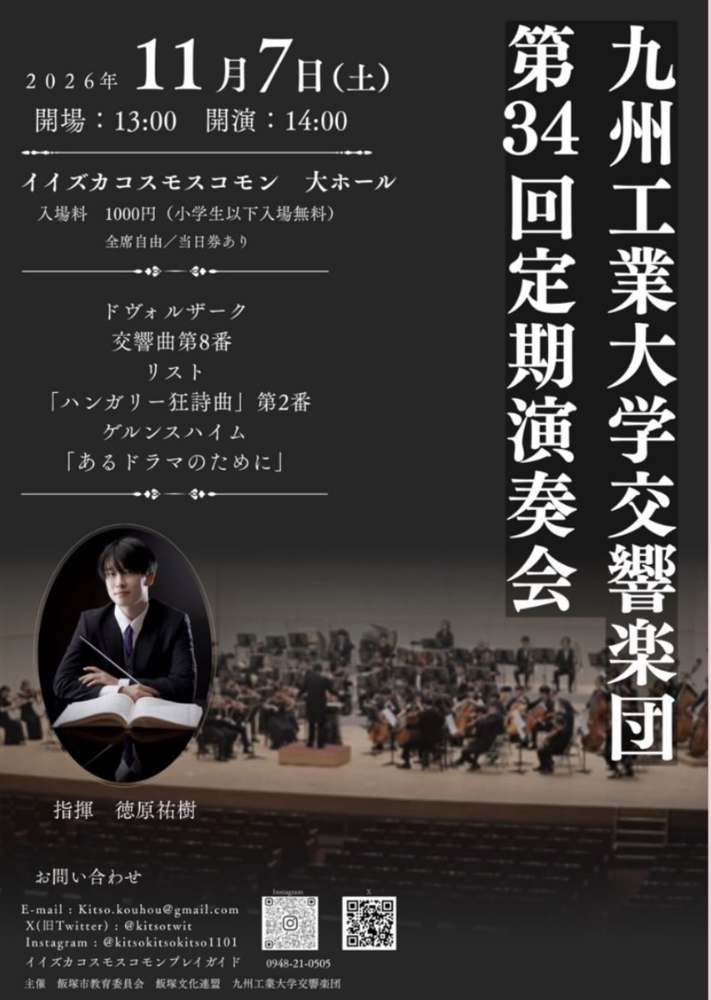
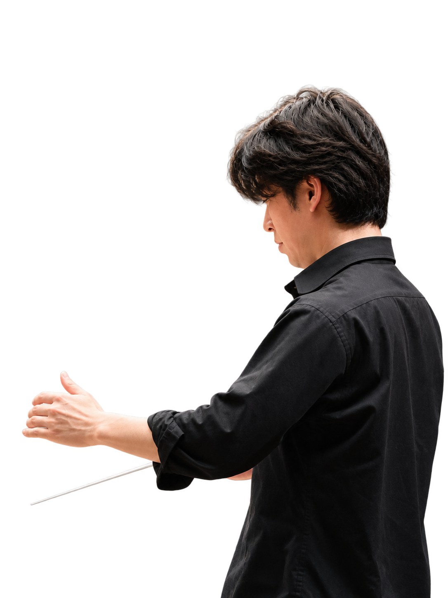

過去公演 · デモ
第34回
定期演奏会
- 日時
13:00 開場 ／ 14:00 開演- 会場
- イイヅカコスモスコモン 大ホール

PROGRAM
演奏曲目
-
メイン曲
アントニン・ドヴォルザーク
交響曲 第8番
第1楽章では、チェロの落ち着いた旋律に続いて、鳥のさえずりを思わせるフルートが聞こえてきます。終楽章はトランペットのファンファーレで幕を開け、チェロが奏でる主題が、楽器を替えながらさまざまな表情を見せます。
-
序曲
フランツ・リスト
ハンガリー狂詩曲 第2番
ハンガリーの舞曲を思わせる、緩やかな前半と勢いのある後半が対照的な作品です。重々しい出だしから軽やかな踊りへと移り、細かな音の動きが最後に向けて勢いを増していきます。
-
序サブ
フリードリヒ・ゲルンスハイム
交響詩「あるドラマのために」
ゲルンスハイムが大編成の管弦楽のために書いた交響詩です。「あるドラマのために」という題名を手がかりに、楽器の音色や響きの変化から、どんな場面が浮かぶか想像しながらお聴きください。
CONDUCTOR 指揮者紹介
徳原 祐樹
Yuki Tokuhara
第34回定期演奏会で指揮を務めました。桐朋学園大学で指揮を学び、第4回ヴラツァ国際指揮者コンクールで第2位を受賞。
第34回定期演奏会で指揮を務めました。
2000年生まれ。
佐賀大学理工学部を経て桐朋学園大学にて指揮を学ぶ。OC指揮コースを指揮科上位の成績で修了。
指揮を増井信貴、木許裕介、音楽理論を橋本正昭、ソルフェージュを今井治人の各氏に師事。
尾高忠明、沼尻竜典、下野竜也、Samuel Couffigna、Miguel Romea各氏が開講するマスタークラスを受講。
ウィーンの夏季セミナーにてマスタークラスを受講し、最終日の修了コンサートで指揮。
第4回ヴラツァ国際指揮者コンクールで2位受賞。日本人初の入賞。
24年福岡にてラフマニノフのピアノコンチェルト2番と交響曲2番の「ダブルラフマニノフプログラム」を指揮。
現在福岡市民オーケストラ、佐賀交響楽団、福岡教育大学管弦楽団及び佐賀大学管弦楽団の指揮トレーナー。
